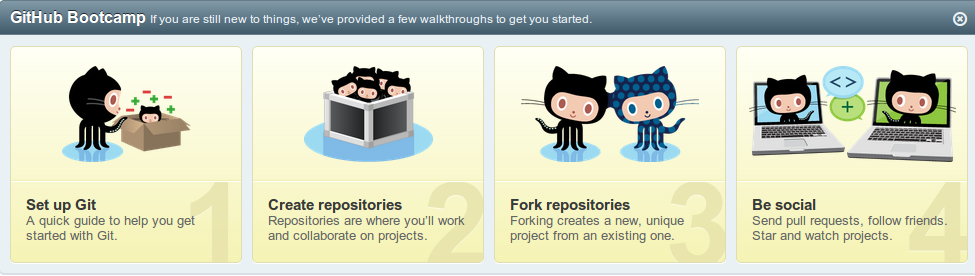
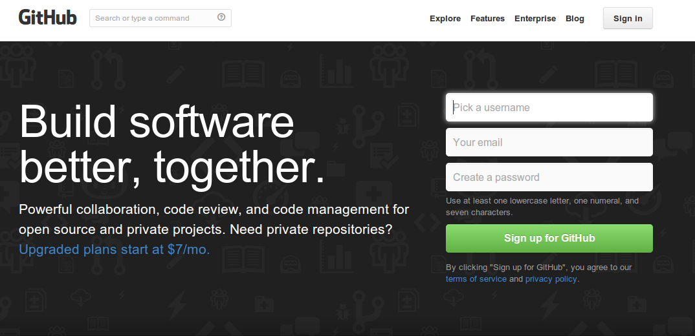
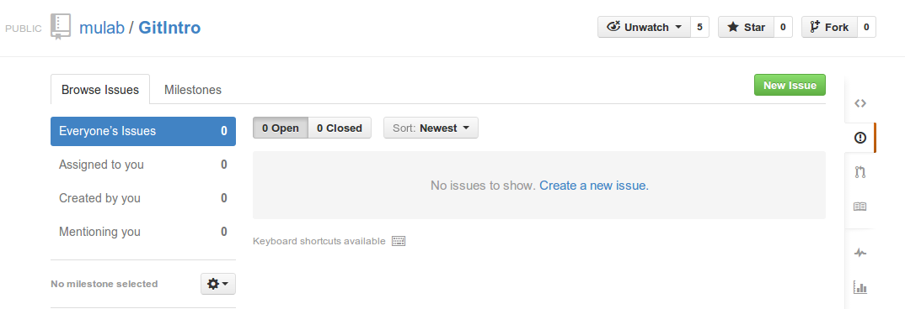
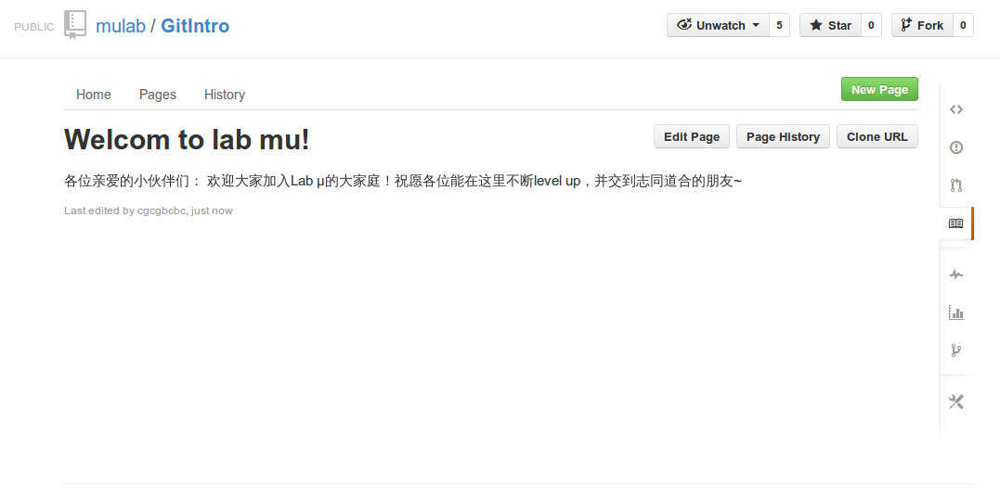
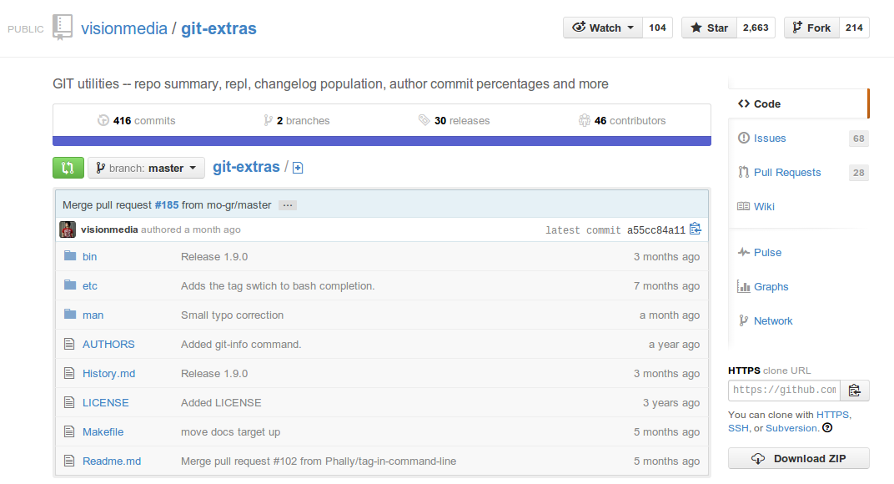

Introduction to MailList and Github&git
Created by cgcgbcbc@labmu
Powerd by reveal.js
Outline
- 邮件列表
- Github
- Extras Resource
邮件列表/google网上论坛

发帖
- 登录网上论坛发帖: https://groups.google.com/forum/#!forum/mulab
- 通过邮件发帖:mulab@googlegroups.com
回帖
- 登录网上论坛回帖
- 通过邮件回帖;回复发件人仅发件人能收到,回复邮件列表将回帖到网上论坛中
邮件回复
Reply && Reply All:
Reply:仅回复给发件人
Reply All:同时抄送给收件人
*当收到来自mulab.thu@gmail.com的邮件时,请选择reply all,以便让真正的发件人收到你的回复
Github
A web-based hosting service for projects that use the Git revision control system
注册
please download github client if you use windows or mac os
版本控制？
- 团队工作中如何获取以及追踪他人的更改？
- 个人工作中如何记录自己的修改过程？
- c-c, c-v, rename, add a note?
使用版本控制可以：
- pull latest changes by others
- commit on every change you make
- push your commit so others can pull it
版本控制工具：svn,cvs,git,adobe version cue
Github?
除了托管项目外还提供了许多有用的功能
issues
记录bug,讨论等等
wiki
Practice
$ git pull https://github.com/mulab/GitIntro.gitcreate a file named #{your_name}
$ echo hello>cgcgbcbcrun the command "git commit",it may look like:
$ git commit
# 位于分支 master
# Untracked files:
# （使用 "git add <file>..." 以包含要提交的内容）
#
# cgcgbcbc
nothing added to commit but untracked files present (use "git add" to track)
$ git add .
$ git status
# 位于分支 master
# 要提交的变更：
# （使用 "git reset HEAD <file>..." 撤出暂存区）
#
# 新文件： cgcgbcbc
#
$ git commit -m "cgcgbcbc's hello"
[master e7ed973] cgcgbcbc's hello
1 file changed, 1 insertion(+)
create mode 100644 cgcgbcbc
$ git status
# 位于分支 master
# 您的分支领先 'origin/master' 共 1 个提交。
# (use "git push" to publish your local commits)
#
nothing to commit, working directory clean
Best Practice
- pull before start working
- commit as often as possible
- push only after all your work is done
- *create your own working branch
- *rebase your branch whenever master branch goes ahead
- *open a pull request after your branch is done
Extras Resource
git-extras
Extras Resource
pro git
http://git.oschina.net/progit/index.html